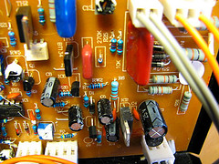

Code et musique
Jean-Baptiste Dusseaut eXtreme Programmer

DIY
 VSLe code est partout et fait tourner le monde
Si vous n'êtes pas programmeur, vous êtes programmés.
Mais surtout ça permet de faire des choses cool

Ce que permet le code
- Se tromper facilement
- Réutiliser massivement -> GitHub \o/
- Partager massivement -> GitHub \o/
- Demander de l'aide facilemenrt -> Stackoverflow \o/
Premier exemple
Arduino - le chaînon manquant

- Open source
- Micro controller
- Sensors
- Actuators

int led = 13;
void setup() {
pinMode(led, OUTPUT);
}
void loop() {
digitalWrite(led, HIGH);
delay(1000);
digitalWrite(led, LOW);
delay(1000);
}
Avec un peu d'imagination
Deuxième exemple
Et si on générait du son
(use 'overtone.live)
(definst foo [] (saw 220))
(definst bar [freq 440] (saw freq))
(definst trem [freq 440 depth 10 rate 6 length 3]
(* 0.3
(line:kr 0 1 length FREE)
(saw (+ freq (* depth (sin-osc:kr rate))))))
(defn rampup []
(demo 7 (lpf (mix (saw [50 (line 100 1600 5) 101 100.5]))
(lin-lin (lf-tri (line 2 20 5)) -1 1 400 4000))))
Troisième exemple
Votre navigateur peut faire des choses
La voie du développeur
Une petite introduction à la programmation
Kata FizzBuzz en JavaScript
FizzBuzz
- 1 -> "1"
- 2 -> "2"
- 3 -> "Fizz"
- 5 -> "Buzz"
- 15 -> "FizzBuzz"
- Amateur
-
- Fait ça pour son plaisir
- Pas d'impact sur la vie des autres
- Professionnel
-
- Touche éventuellement une rémunération
- Impact sur la vie des clients, des utilisateurs, des futures développeurs
Votre code ne vous appartient pas
Ce n'est pas au moment du concert qu'il faut apprendre à jouer de la guitare
Entraînement
- Expérimentation
- Théorie
- Recommencer (pendant 10 ans)
- Coding dojo
- Kata
Quelques pratiques à expérimenter
- Test Driven Development
- Refactoring
- Design patterns
Quelques acronymes à retenir
- SOLID
- DRY
- KISS
Crédits photos
- Windell Oskay - Solder Station 3
- Paul Heaberlin - Day 285/365